Last updated: 2026-04-01
Checks: 7 0
Knit directory: scratch/
This reproducible R Markdown analysis was created with workflowr (version 1.7.2). The Checks tab describes the reproducibility checks that were applied when the results were created. The Past versions tab lists the development history.
Great! Since the R Markdown file has been committed to the Git repository, you know the exact version of the code that produced these results.
Great job! The global environment was empty. Objects defined in the global environment can affect the analysis in your R Markdown file in unknown ways. For reproduciblity it’s best to always run the code in an empty environment.
The command set.seed(20250402) was run prior to running
the code in the R Markdown file. Setting a seed ensures that any results
that rely on randomness, e.g. subsampling or permutations, are
reproducible.
Great job! Recording the operating system, R version, and package versions is critical for reproducibility.
Nice! There were no cached chunks for this analysis, so you can be confident that you successfully produced the results during this run.
Great job! Using relative paths to the files within your workflowr project makes it easier to run your code on other machines.
Great! You are using Git for version control. Tracking code development and connecting the code version to the results is critical for reproducibility.
The results in this page were generated with repository version 8ef4d6b. See the Past versions tab to see a history of the changes made to the R Markdown and HTML files.
Note that you need to be careful to ensure that all relevant files for
the analysis have been committed to Git prior to generating the results
(you can use wflow_publish or
wflow_git_commit). workflowr only checks the R Markdown
file, but you know if there are other scripts or data files that it
depends on. Below is the status of the Git repository when the results
were generated:
Ignored files:
Ignored: .DS_Store
Ignored: .Rhistory
Ignored: .Rproj.user/
Note that any generated files, e.g. HTML, png, CSS, etc., are not included in this status report because it is ok for generated content to have uncommitted changes.
These are the previous versions of the repository in which changes were
made to the R Markdown (analysis/compare_phetk_mode.Rmd)
and HTML (docs/compare_phetk_mode.html) files. If you’ve
configured a remote Git repository (see ?wflow_git_remote),
click on the hyperlinks in the table below to view the files as they
were in that past version.
| File | Version | Author | Date | Message |
|---|---|---|---|---|
| Rmd | 8ef4d6b | Xiang Zhu | 2026-04-01 | wflow_publish("analysis/compare_phetk_mode.Rmd") |
suppressPackageStartupMessages({
library(data.table)
library(xzTools)
})
new_dt <- data.table::fread("/Users/xiangzhu/Downloads/phetk_aou_20260326/dsub_5a_results.tsv")
data.table::setorder(new_dt, phecode)20260326 directold_dt <- data.table::fread("/Users/xiangzhu/Downloads/phetk_aou_20260326/direct_chr18_53346253_T_C_phewas_results.tsv")
data.table::setorder(old_dt, phecode)
table(new_dt$phecode %in% old_dt$phecode, useNA = "always")
TRUE <NA>
2121 0
FALSE TRUE <NA>
69 2121 0 phecode cases controls p_value neg_log_p_value standard_error
<char> <int> <int> <num> <num> <num>
1: BI_164 59227 198409 4.110278e-02 1.38612884 0.010
2: BI_180.2 309 277535 8.609287e-03 2.06503283 0.121
3: BI_180.31 2235 275401 8.154613e-01 0.08859663 0.045
4: CA_100.12 399 277840 8.350447e-01 0.07829026 0.106
5: CA_109.3 1225 276416 6.086062e-01 0.21566364 0.060
6: CA_110.4 251 277969 6.824090e-01 0.16595522 0.134
7: CA_136.3 204 277849 6.950760e-02 1.15796774 0.152
8: CA_148.1 2653 274673 9.136609e-02 1.03921494 0.042
9: CM_760 720 276679 5.756898e-01 0.23981144 0.080
10: CM_763.13 53 278230 9.378651e-02 1.02785962 0.315
11: CM_763.32 1740 275681 4.431064e-01 0.35349197 0.051
12: CM_772 348 277742 8.899548e-01 0.05063205 0.113
13: CV_400.2 4658 268227 7.006926e-01 0.15447250 0.032
14: CV_401.61 469 277544 7.264063e-01 0.13882039 0.098
15: CV_408 253 277513 1.303758e-01 0.88480299 0.131
16: CV_413.1 11341 257965 9.402891e-01 0.02673862 0.021
17: CV_431.12 1583 275615 1.360714e-01 0.86623313 0.053
18: CV_431.14 71 278175 1.438027e-01 0.84223301 0.261
19: CV_440 19890 250567 9.250399e-01 0.03383953 0.016
20: CV_440.22 575 277280 4.423078e-02 1.35427536 0.087
21: DE_669.3 1637 275718 8.526166e-01 0.06924622 0.052
22: EM_200.21 2721 274319 5.525780e-01 0.25760644 0.041
23: EM_209.13 561 277519 5.420365e-01 0.26597148 0.089
24: EM_238.4 361 277701 1.391679e-01 0.85646077 0.115
25: EM_244 3308 270593 4.755138e-01 0.32283687 0.037
26: GE_960.3 56 278257 8.600104e-01 0.06549631 0.284
27: GE_961.8 1820 275878 2.077493e-01 0.68246048 0.050
28: GE_962.5 230 277828 3.809126e-02 1.41917462 0.142
29: GE_978 1076 276832 2.891703e-01 0.53884638 0.066
30: GI_500.41 317 277551 3.807771e-01 0.41932920 0.119
31: GI_502.11 9128 263455 1.321362e-01 0.87897828 0.022
32: GI_502.12 552 277120 1.913841e-01 0.71809421 0.091
33: GI_506.51 1166 274981 2.359883e-01 0.62710947 0.063
34: GI_511 69628 188132 4.332428e-02 1.36326860 0.010
35: GU_588.2 1268 274934 8.194115e-01 0.08649796 0.059
36: GU_592.2 763 276135 4.128615e-01 0.38419560 0.077
37: GU_594.2 22067 236726 4.871433e-05 4.31234325 0.015
38: GU_594.5 345 277077 1.954493e-01 0.70896582 0.113
39: ID_016 1179 275655 6.286327e-02 1.20160305 0.061
40: ID_052 16609 250543 9.289101e-01 0.03202631 0.017
41: MB_280.4 1186 276179 8.831248e-01 0.05397792 0.062
42: MS_714.5 645 276567 5.158410e-01 0.28748418 0.083
43: MS_721.2 4861 269069 7.485053e-01 0.12580513 0.031
44: MS_730.1 4473 273023 6.887321e-01 0.16194967 0.032
45: MS_740.9 455 277566 5.339845e-01 0.27247137 0.101
46: MS_745.2 1129 276805 1.955527e-01 0.70873612 0.064
47: NS_320.2 94 278118 1.226477e-01 0.91134063 0.213
48: NS_325.1 2745 272728 5.663528e-01 0.24691293 0.041
49: NS_329.3 177 277773 8.788136e-01 0.05610323 0.160
50: NS_330.15 57 278283 1.798113e-01 0.74518291 0.297
51: NS_333.63 338 277620 1.279003e-01 0.89312833 0.118
52: NS_333.64 7068 268433 1.329083e-01 0.87644789 0.026
53: NS_337.6 679 276979 5.226941e-01 0.28175238 0.082
54: NS_343 3025 273180 3.664709e-01 0.43596046 0.039
55: NS_346 3257 272364 6.152460e-02 1.21095117 0.038
56: NS_346.1 1312 275789 7.579178e-03 2.12037790 0.060
57: NS_355.2 4890 267233 6.404132e-01 0.19353971 0.031
58: RE_465.2 302 277477 4.434775e-01 0.35312843 0.124
59: RE_468.9 1253 274785 1.441650e-01 0.84114022 0.059
60: RE_477 582 276918 7.899536e-01 0.10239840 0.088
61: RE_488.5 164 277873 1.247853e-01 0.90383665 0.161
62: RE_495.1 12026 259243 1.222423e-02 1.91277849 0.020
63: SO_367.7 456 277574 7.556582e-01 0.12167460 0.099
64: SO_374.14 679 277196 3.840342e-01 0.41563005 0.081
65: SO_381.81 176 277985 1.287348e-01 0.89030407 0.157
66: SO_384.3 90 278012 4.653745e-01 0.33219742 0.221
67: SS_800.11 3413 266246 2.495577e-01 0.60282911 0.037
68: SS_832.9 290 277909 2.779774e-01 0.55599051 0.123
69: SS_834 11571 260227 1.105787e-01 0.95632843 0.020
phecode cases controls p_value neg_log_p_value standard_error
<char> <int> <int> <num> <num> <num>
beta conf_int_1 conf_int_2 odds_ratio log10_odds_ratio converged
<num> <num> <num> <num> <num> <lgcl>
1: 0.020698355 0.001 0.041 1.0209141 0.0089891813 TRUE
2: 0.318528453 0.081 0.556 1.3751027 0.1383351496 TRUE
3: 0.010481119 -0.078 0.099 1.0105362 0.0045518923 TRUE
4: -0.022060007 -0.230 0.186 0.9781815 -0.0095805392 FALSE
5: -0.030879939 -0.149 0.087 0.9695920 -0.0134109872 TRUE
6: 0.054790381 -0.208 0.317 1.0563192 0.0237951601 TRUE
7: 0.276011479 -0.022 0.574 1.3178630 0.1198702625 FALSE
8: 0.070921313 -0.011 0.153 1.0734968 0.0308007347 TRUE
9: 0.044760567 -0.112 0.202 1.0457774 0.0194392673 TRUE
10: 0.528433282 -0.090 1.146 1.6962726 0.2294956584 FALSE
11: -0.039042437 -0.139 0.061 0.9617099 -0.0169559152 TRUE
12: -0.015651132 -0.237 0.206 0.9844707 -0.0067972004 TRUE
13: -0.012111933 -0.074 0.050 0.9879611 -0.0052601458 TRUE
14: 0.034295892 -0.158 0.226 1.0348908 0.0148945165 TRUE
15: -0.198230337 -0.455 0.059 0.8201809 -0.0860903416 FALSE
16: -0.001550455 -0.042 0.039 0.9984507 -0.0006733539 FALSE
17: -0.079046017 -0.183 0.025 0.9239974 -0.0343292491 TRUE
18: 0.382194407 -0.130 0.895 1.4654970 0.1659849219 FALSE
19: -0.001475965 -0.032 0.029 0.9985251 -0.0006410034 TRUE
20: -0.174543056 -0.345 -0.005 0.8398407 -0.0758030860 TRUE
21: 0.009620794 -0.092 0.111 1.0096672 0.0041782579 TRUE
22: -0.024156186 -0.104 0.056 0.9761332 -0.0104908981 TRUE
23: -0.054396438 -0.229 0.120 0.9470566 -0.0236240727 TRUE
24: 0.169474319 -0.055 0.394 1.1846819 0.0736017617 TRUE
25: 0.026637475 -0.047 0.100 1.0269954 0.0115685085 TRUE
26: 0.050164521 -0.507 0.608 1.0514441 0.0217861746 FALSE
27: -0.062645426 -0.160 0.035 0.9392765 -0.0272065629 TRUE
28: -0.294305401 -0.572 -0.016 0.7450489 -0.1278152116 TRUE
29: 0.069814555 -0.059 0.199 1.0723093 0.0303200758 TRUE
30: -0.103908530 -0.336 0.128 0.9013077 -0.0451269013 TRUE
31: -0.033714143 -0.078 0.010 0.9668478 -0.0146418664 TRUE
32: 0.119263723 -0.060 0.298 1.1266670 0.0517955768 TRUE
33: 0.074566810 -0.049 0.198 1.0774173 0.0323839540 TRUE
34: 0.019637321 0.001 0.039 1.0198314 0.0085283803 TRUE
35: -0.013567823 -0.130 0.103 0.9865238 -0.0058924309 TRUE
36: 0.062689642 -0.087 0.213 1.0646964 0.0272257655 TRUE
37: 0.061505627 0.032 0.091 1.0634365 0.0267115546 TRUE
38: -0.146261240 -0.368 0.075 0.8639320 -0.0635204492 TRUE
39: 0.113422093 -0.006 0.233 1.1201046 0.0492585889 TRUE
40: -0.001520581 -0.035 0.032 0.9984806 -0.0006603799 TRUE
41: 0.009061118 -0.112 0.130 1.0091023 0.0039351937 TRUE
42: -0.054029013 -0.217 0.109 0.9474046 -0.0234645021 TRUE
43: 0.009881125 -0.051 0.070 1.0099301 0.0042913181 TRUE
44: 0.012923491 -0.050 0.076 1.0130074 0.0056126009 TRUE
45: 0.062755573 -0.135 0.261 1.0647666 0.0272543992 TRUE
46: 0.082554973 -0.042 0.208 1.0860584 0.0358531691 TRUE
47: -0.328631147 -0.746 0.089 0.7199085 -0.1427226936 FALSE
48: 0.023334276 -0.056 0.103 1.0236087 0.0101339474 TRUE
49: 0.024402199 -0.289 0.338 1.0247024 0.0105977402 FALSE
50: 0.397762376 -0.183 0.979 1.4884903 0.1727460051 FALSE
51: 0.179668386 -0.052 0.411 1.1968204 0.0780289887 FALSE
52: 0.039184334 -0.012 0.090 1.0399622 0.0170175399 TRUE
53: 0.052636382 -0.109 0.214 1.0540463 0.0228596904 TRUE
54: 0.035199960 -0.041 0.112 1.0358268 0.0152871483 TRUE
55: 0.070381845 -0.003 0.144 1.0729178 0.0305664469 TRUE
56: 0.159830108 0.043 0.277 1.1733115 0.0694133339 TRUE
57: 0.014346559 -0.046 0.075 1.0144500 0.0062306312 TRUE
58: 0.094671184 -0.147 0.337 1.0992973 0.0411151727 TRUE
59: -0.086715388 -0.203 0.030 0.9169380 -0.0376600146 TRUE
60: 0.023410268 -0.149 0.196 1.0236864 0.0101669503 TRUE
61: -0.247889998 -0.564 0.069 0.7804458 -0.1076572582 FALSE
62: 0.050387601 0.011 0.090 1.0516786 0.0218830571 TRUE
63: 0.030732292 -0.163 0.224 1.0312094 0.0133468647 TRUE
64: 0.070943096 -0.089 0.231 1.0735201 0.0308101951 TRUE
65: -0.237783644 -0.545 0.069 0.7883732 -0.1032681243 TRUE
66: -0.161421157 -0.595 0.272 0.8509336 -0.0701043175 FALSE
67: 0.042113018 -0.030 0.114 1.0430124 0.0182894513 TRUE
68: -0.133597203 -0.375 0.108 0.8749424 -0.0580205282 TRUE
69: 0.032596123 -0.007 0.073 1.0331332 0.0141563161 TRUE
beta conf_int_1 conf_int_2 odds_ratio log10_odds_ratio converged
<num> <num> <num> <num> <num> <lgcl>
phecode_sex_restriction
<char>
1: Both
2: Both
3: Both
4: Both
5: Both
6: Both
7: Both
8: Both
9: Both
10: Both
11: Both
12: Both
13: Both
14: Both
15: Both
16: Both
17: Both
18: Both
19: Both
20: Both
21: Both
22: Both
23: Both
24: Both
25: Both
26: Both
27: Both
28: Both
29: Both
30: Both
31: Both
32: Both
33: Both
34: Both
35: Both
36: Both
37: Both
38: Both
39: Both
40: Both
41: Both
42: Both
43: Both
44: Both
45: Both
46: Both
47: Both
48: Both
49: Both
50: Both
51: Both
52: Both
53: Both
54: Both
55: Both
56: Both
57: Both
58: Both
59: Both
60: Both
61: Both
62: Both
63: Both
64: Both
65: Both
66: Both
67: Both
68: Both
69: Both
phecode_sex_restriction
<char>
phecode_string
<char>
1: Anemia
2: Polyclonal hypergammaglobulinemia
3: Monoclonal gammopathy
4: Malignant neoplasm of the tongue
5: Malignant neoplasm of brain
6: Malignant neoplasm of the pituitary gland and craniopharyngeal duct
7: Benign neoplasm of the small intestine
8: Benign neoplasm of eye
9: Congenital anomalies of genital organs
10: Patent ductus arteriosus
11: Atrial septal defect
12: Congenital disorder of endocrine glands
13: Rheumatic heart disease
14: Renovascular hypertension
15: Diseases of pulmonary vessels
16: Mitral valve disorders
17: Hemorrhagic stroke
18: Cerebellar stroke syndrome*
19: Embolism and thrombosis
20: Thrombosis of cerebral or precerebral arteries
21: Hidradenitis suppurativa
22: Diffuse goiter
23: Hyperprolactinemia*
24: Hypervitaminosis D
25: Disorders of lipoprotein metabolism and other lipidemias
26: Sex chromosome anomalies
27: Genetic susceptibility to malignant neoplasm
28: Disorders of urea cycle metabolism
29: Genetic disorders relating to growth and musculoskeletal system
30: Impacted teeth*
31: Dental caries
32: Dental abrasion and erosion
33: Dry mouth*
34: Gastro-esophageal reflux disease [GERD]
35: Abnormal results of function study of kidney
36: Urethritis
37: Dysuria
38: Oliguria and anuria
39: Chlamydia
40: Herpesvirus
41: Sedative, hypnotic, or anxiolytic related disorders
42: Spondylolysis
43: Ganglion cyst
44: Segmental and somatic dysfunction
45: Dislocation of vertebra or sternum
46: Fracture of pelvis
47: Meningitis due to other non-infectious causes
48: Abnormality of gait
49: Age-related cognitive decline
50: Juvenile myoclonic epilepsy*
51: Sleep related bruxism
52: Restless legs syndrome
53: Idiopathic progressive neuropathy
54: Disorders of autonomic nervous system
55: Brain damage and brain death
56: Postconcussion syndrome
57: Alteration of consciousness
58: Chronic Pharyngitis
59: Lobar pneumonia*
60: Inhalation lung injury
61: Stridor
62: Solitary pulmonary nodule
63: Scleritis
64: Round hole of retina without detachment
65: Esophoria
66: Mydriasis
67: Pleurodynia*
68: Hypercalciuria*
69: Abnormal cytological findings in specimens from genital organs
phecode_string
<char>
phecode_category
<char>
1: Blood/Immune
2: Blood/Immune
3: Blood/Immune
4: Neoplasms
5: Neoplasms
6: Neoplasms
7: Neoplasms
8: Neoplasms
9: Congenital
10: Congenital
11: Congenital
12: Congenital
13: Cardiovascular
14: Cardiovascular
15: Cardiovascular
16: Cardiovascular
17: Cardiovascular
18: Cardiovascular
19: Cardiovascular
20: Cardiovascular
21: Dermatological
22: Endocrine/Metab
23: Endocrine/Metab
24: Endocrine/Metab
25: Endocrine/Metab
26: Genetic
27: Genetic
28: Genetic
29: Genetic
30: Gastrointestinal
31: Gastrointestinal
32: Gastrointestinal
33: Gastrointestinal
34: Gastrointestinal
35: Genitourinary
36: Genitourinary
37: Genitourinary
38: Genitourinary
39: Infections
40: Infections
41: Mental
42: Muscloskeletal
43: Muscloskeletal
44: Muscloskeletal
45: Muscloskeletal
46: Muscloskeletal
47: Neurological
48: Neurological
49: Neurological
50: Neurological
51: Neurological
52: Neurological
53: Neurological
54: Neurological
55: Neurological
56: Neurological
57: Neurological
58: Respiratory
59: Respiratory
60: Respiratory
61: Respiratory
62: Respiratory
63: Sense organs
64: Sense organs
65: Sense organs
66: Sense organs
67: Symptoms
68: Symptoms
69: Symptoms
phecode_category
<char> Min. 1st Qu. Median Mean 3rd Qu. Max.
4.871e-05 1.287e-01 3.665e-01 3.960e-01 6.824e-01 9.403e-01 Min. 1st Qu. Median Mean 3rd Qu. Max.
1.180e-06 2.093e-01 4.626e-01 4.656e-01 7.002e-01 9.999e-01 Min. 1st Qu. Median Mean 3rd Qu. Max.
53 338 1076 4498 3025 69628 Min. 1st Qu. Median Mean 3rd Qu. Max.
50 262 1119 5682 5077 116611
FALSE TRUE <NA>
13 56 0
FALSE TRUE <NA>
530 1591 0 new_dt_shared <- new_dt[phecode %in% shared_phecode]
old_dt_shared <- old_dt[phecode %in% shared_phecode]
xzTools::compare_2dts(
new_dt = new_dt_shared,
old_dt = old_dt_shared,
cols_to_compare = names(old_dt_shared),
cols_to_match = NULL,
get_exact_match = TRUE,
get_correlation = FALSE,
get_regression = FALSE,
get_scatterplot = FALSE
) new_col old_col nrow_total nrow_same
<char> <char> <int> <int>
1: phecode phecode 2121 2121
2: cases cases 2121 2121
3: controls controls 2121 2121
4: p_value p_value 2121 5
5: neg_log_p_value neg_log_p_value 2121 3
6: standard_error standard_error 2121 2119
7: beta beta 2121 4
8: conf_int_1 conf_int_1 2121 2119
9: conf_int_2 conf_int_2 2121 2118
10: odds_ratio odds_ratio 2121 104
11: log10_odds_ratio log10_odds_ratio 2121 76
12: converged converged 2121 2020
13: phecode_sex_restriction phecode_sex_restriction 2121 2121
14: phecode_string phecode_string 2121 2121
15: phecode_category phecode_category 2121 2121
nrow_both_nonna same_both_nonna
<int> <lgcl>
1: 2121 TRUE
2: 2121 TRUE
3: 2121 TRUE
4: 2121 FALSE
5: 2121 FALSE
6: 2121 FALSE
7: 2121 FALSE
8: 2121 FALSE
9: 2121 FALSE
10: 2121 FALSE
11: 2121 FALSE
12: 2121 FALSE
13: 2121 TRUE
14: 2121 TRUE
15: 2121 TRUEscat<-xzTools::compare_2dts(
new_dt = new_dt_shared,
old_dt = old_dt_shared,
cols_to_compare = names(old_dt_shared)[4:11],
cols_to_match = NULL,
get_exact_match = FALSE,
get_correlation = TRUE,
get_regression = TRUE,
get_scatterplot = TRUE
)Pearson correlation between p_value in new and p_value in old:
Estimate = 0.99999999, 95% CI = [0.99999998, 0.99999999]
Regression coefficients for p_value (new ~ old):
Estimate Std. Error t value Pr(>|t|)
(Intercept) 3.312205e-06 2.055589e-06 1.611316e+00 0.1072597
x 9.999949e-01 3.747337e-06 2.668548e+05 0.0000000
Pearson correlation between neg_log_p_value in new and neg_log_p_value in old:
Estimate = 0.99999978, 95% CI = [0.99999976, 0.99999979]
Regression coefficients for neg_log_p_value (new ~ old):
Estimate Std. Error t value Pr(>|t|)
(Intercept) 2.853504e-06 1.031958e-05 2.765137e-01 0.7821805
x 9.999797e-01 1.452313e-05 6.885431e+04 0.0000000
Pearson correlation between standard_error in new and standard_error in old:
Estimate = 0.99999979, 95% CI = [0.99999977, 0.99999981]
Regression coefficients for standard_error (new ~ old):
Estimate Std. Error t value Pr(>|t|)
(Intercept) -9.782614e-07 1.646042e-06 -0.5943112 0.5523674
x 1.000016e+00 1.402252e-05 71315.0172400 0.0000000
Pearson correlation between beta in new and beta in old:
Estimate = 1.00000000, 95% CI = [1.00000000, 1.00000000]
Regression coefficients for beta (new ~ old):
Estimate Std. Error t value Pr(>|t|)
(Intercept) 1.622421e-07 2.327808e-07 6.969739e-01 0.4858956
x 1.000008e+00 2.048047e-06 4.882740e+05 0.0000000
Pearson correlation between conf_int_1 in new and conf_int_1 in old:
Estimate = 0.99999989, 95% CI = [0.99999988, 0.99999989]
Regression coefficients for conf_int_1 (new ~ old):
Estimate Std. Error t value Pr(>|t|)
(Intercept) -3.317551e-06 2.618526e-06 -1.266953 0.2053112
x 9.999887e-01 1.040634e-05 96094.212225 0.0000000
Pearson correlation between conf_int_2 in new and conf_int_2 in old:
Estimate = 0.99999982, 95% CI = [0.99999980, 0.99999983]
Regression coefficients for conf_int_2 (new ~ old):
Estimate Std. Error t value Pr(>|t|)
(Intercept) -7.715295e-06 3.451872e-06 -2.235105 0.0255143
x 1.000049e+00 1.320133e-05 75753.675211 0.0000000
Pearson correlation between odds_ratio in new and odds_ratio in old:
Estimate = 0.99999999, 95% CI = [0.99999999, 0.99999999]
Regression coefficients for odds_ratio (new ~ old):
Estimate Std. Error t value Pr(>|t|)
(Intercept) -1.511275e-05 3.188258e-06 -4.740128 2.277745e-06
x 1.000015e+00 3.121031e-06 320411.872024 0.000000e+00
Pearson correlation between log10_odds_ratio in new and log10_odds_ratio in old:
Estimate = 1.00000000, 95% CI = [1.00000000, 1.00000000]
Regression coefficients for log10_odds_ratio (new ~ old):
Estimate Std. Error t value Pr(>|t|)
(Intercept) 7.046086e-08 1.010954e-07 6.969739e-01 0.4858956
x 1.000008e+00 2.048047e-06 4.882740e+05 0.0000000$p_value_vs_p_value
$neg_log_p_value_vs_neg_log_p_value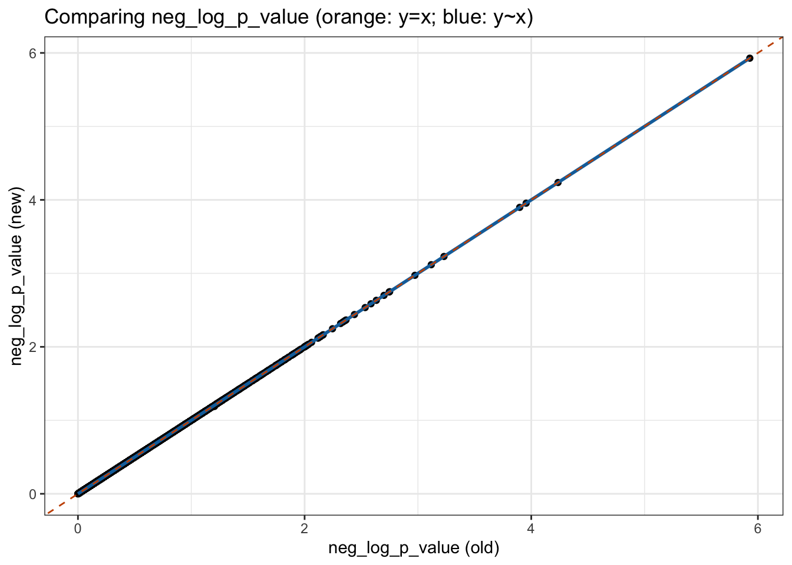
$standard_error_vs_standard_error
$beta_vs_beta
$conf_int_1_vs_conf_int_1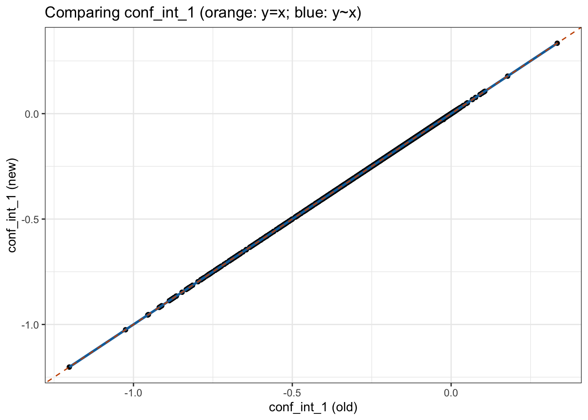
$conf_int_2_vs_conf_int_2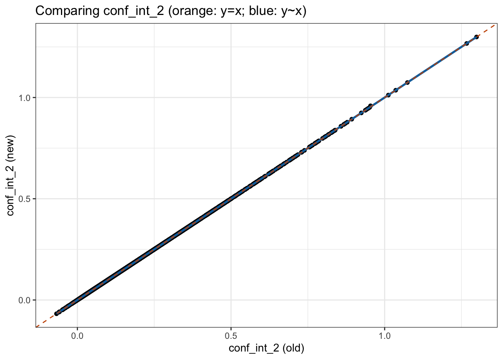
$odds_ratio_vs_odds_ratio
$log10_odds_ratio_vs_log10_odds_ratio20260326 dsub 4cold_dt <- data.table::fread("/Users/xiangzhu/Downloads/phetk_aou_20260326/dsub_4c_results.tsv")
data.table::setorder(old_dt, phecode)
table(new_dt$phecode %in% old_dt$phecode, useNA = "always")
FALSE TRUE <NA>
59 2062 0
FALSE TRUE <NA>
66 2062 0 shared_phecode <- intersect(new_dt$phecode, old_dt$phecode)
new_dt_shared <- new_dt[phecode %in% shared_phecode]
old_dt_shared <- old_dt[phecode %in% shared_phecode]
xzTools::compare_2dts(
new_dt = new_dt_shared,
old_dt = old_dt_shared,
cols_to_compare = names(old_dt_shared),
cols_to_match = NULL,
get_exact_match = TRUE,
get_correlation = FALSE,
get_regression = FALSE,
get_scatterplot = FALSE
) new_col old_col nrow_total nrow_same
<char> <char> <int> <int>
1: phecode phecode 2062 2062
2: cases cases 2062 2062
3: controls controls 2062 2062
4: p_value p_value 2062 6
5: neg_log_p_value neg_log_p_value 2062 5
6: standard_error standard_error 2062 2062
7: beta beta 2062 5
8: conf_int_1 conf_int_1 2062 2061
9: conf_int_2 conf_int_2 2062 2061
10: odds_ratio odds_ratio 2062 106
11: log10_odds_ratio log10_odds_ratio 2062 77
12: converged converged 2062 1964
13: phecode_sex_restriction phecode_sex_restriction 2062 2062
14: phecode_string phecode_string 2062 2062
15: phecode_category phecode_category 2062 2062
nrow_both_nonna same_both_nonna
<int> <lgcl>
1: 2062 TRUE
2: 2062 TRUE
3: 2062 TRUE
4: 2062 FALSE
5: 2062 FALSE
6: 2062 TRUE
7: 2062 FALSE
8: 2062 FALSE
9: 2062 FALSE
10: 2062 FALSE
11: 2062 FALSE
12: 2062 FALSE
13: 2062 TRUE
14: 2062 TRUE
15: 2062 TRUEscat<-xzTools::compare_2dts(
new_dt = new_dt_shared,
old_dt = old_dt_shared,
cols_to_compare = names(old_dt_shared)[4:11],
cols_to_match = NULL,
get_exact_match = FALSE,
get_correlation = TRUE,
get_regression = TRUE,
get_scatterplot = TRUE
)Pearson correlation between p_value in new and p_value in old:
Estimate = 1.00000000, 95% CI = [1.00000000, 1.00000000]
Regression coefficients for p_value (new ~ old):
Estimate Std. Error t value Pr(>|t|)
(Intercept) -5.726413e-07 3.118772e-07 -1.836112e+00 0.0664852
x 1.000001e+00 5.669678e-07 1.763770e+06 0.0000000
Pearson correlation between neg_log_p_value in new and neg_log_p_value in old:
Estimate = 1.00000000, 95% CI = [1.00000000, 1.00000000]
Regression coefficients for neg_log_p_value (new ~ old):
Estimate Std. Error t value Pr(>|t|)
(Intercept) -3.003348e-07 1.465424e-06 -2.049474e-01 0.8376335
x 1.000003e+00 2.072194e-06 4.825818e+05 0.0000000
Pearson correlation between standard_error in new and standard_error in old:
Estimate = 1.00000000, 95% CI = [1.00000000, 1.00000000]Warning in summary.lm(linear_model): essentially perfect fit: summary may be
unreliableRegression coefficients for standard_error (new ~ old):
Estimate Std. Error t value Pr(>|t|)
(Intercept) -4.012094e-17 1.010233e-18 -3.971454e+01 1.299131e-256
x 1.000000e+00 8.592325e-18 1.163829e+17 0.000000e+00
Pearson correlation between beta in new and beta in old:
Estimate = 1.00000000, 95% CI = [1.00000000, 1.00000000]
Regression coefficients for beta (new ~ old):
Estimate Std. Error t value Pr(>|t|)
(Intercept) -2.454648e-08 3.121911e-08 -7.862646e-01 0.4318029
x 9.999988e-01 2.754411e-07 3.630536e+06 0.0000000
Pearson correlation between conf_int_1 in new and conf_int_1 in old:
Estimate = 0.99999999, 95% CI = [0.99999999, 0.99999999]
Regression coefficients for conf_int_1 (new ~ old):
Estimate Std. Error t value Pr(>|t|)
(Intercept) 8.132458e-07 6.540016e-07 1.243492e+00 0.2138281
x 1.000002e+00 2.612398e-06 3.827908e+05 0.0000000
Pearson correlation between conf_int_2 in new and conf_int_2 in old:
Estimate = 0.99999999, 95% CI = [0.99999999, 0.99999999]
Regression coefficients for conf_int_2 (new ~ old):
Estimate Std. Error t value Pr(>|t|)
(Intercept) 1.537260e-06 6.836659e-07 2.248554e+00 0.02464618
x 9.999891e-01 2.598748e-06 3.847964e+05 0.00000000
Pearson correlation between odds_ratio in new and odds_ratio in old:
Estimate = 1.00000000, 95% CI = [1.00000000, 1.00000000]
Regression coefficients for odds_ratio (new ~ old):
Estimate Std. Error t value Pr(>|t|)
(Intercept) 2.073572e-06 4.257315e-07 4.870610e+00 1.197292e-06
x 9.999979e-01 4.163351e-07 2.401907e+06 0.000000e+00
Pearson correlation between log10_odds_ratio in new and log10_odds_ratio in old:
Estimate = 1.00000000, 95% CI = [1.00000000, 1.00000000]
Regression coefficients for log10_odds_ratio (new ~ old):
Estimate Std. Error t value Pr(>|t|)
(Intercept) -1.066040e-08 1.355829e-08 -7.862646e-01 0.4318029
x 9.999988e-01 2.754411e-07 3.630536e+06 0.0000000$p_value_vs_p_value
$neg_log_p_value_vs_neg_log_p_value
$standard_error_vs_standard_error
$beta_vs_beta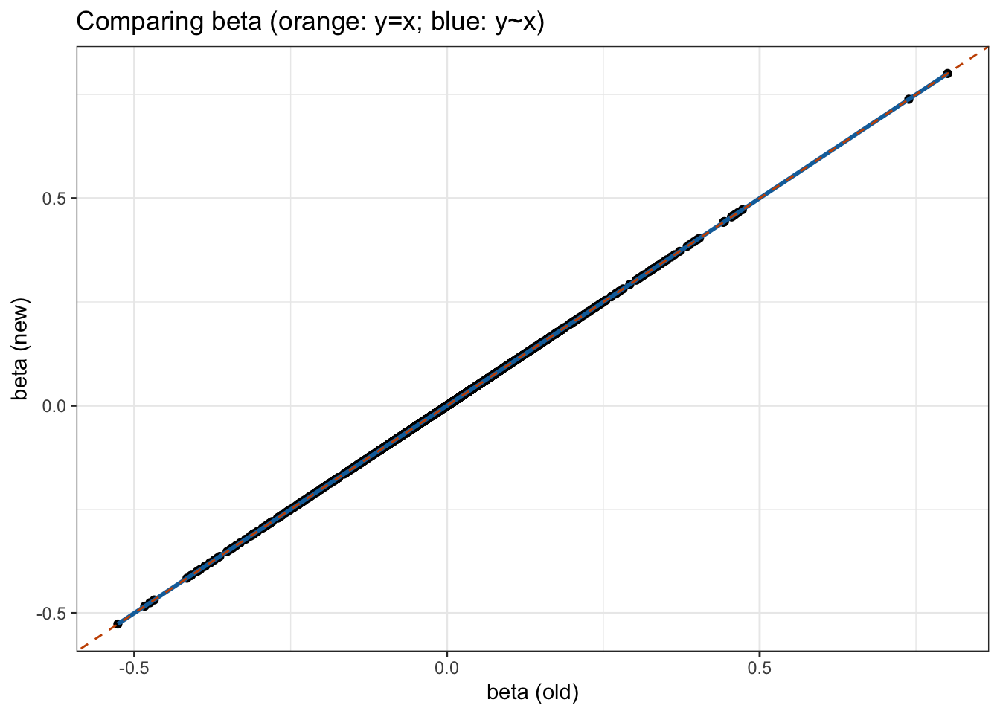
$conf_int_1_vs_conf_int_1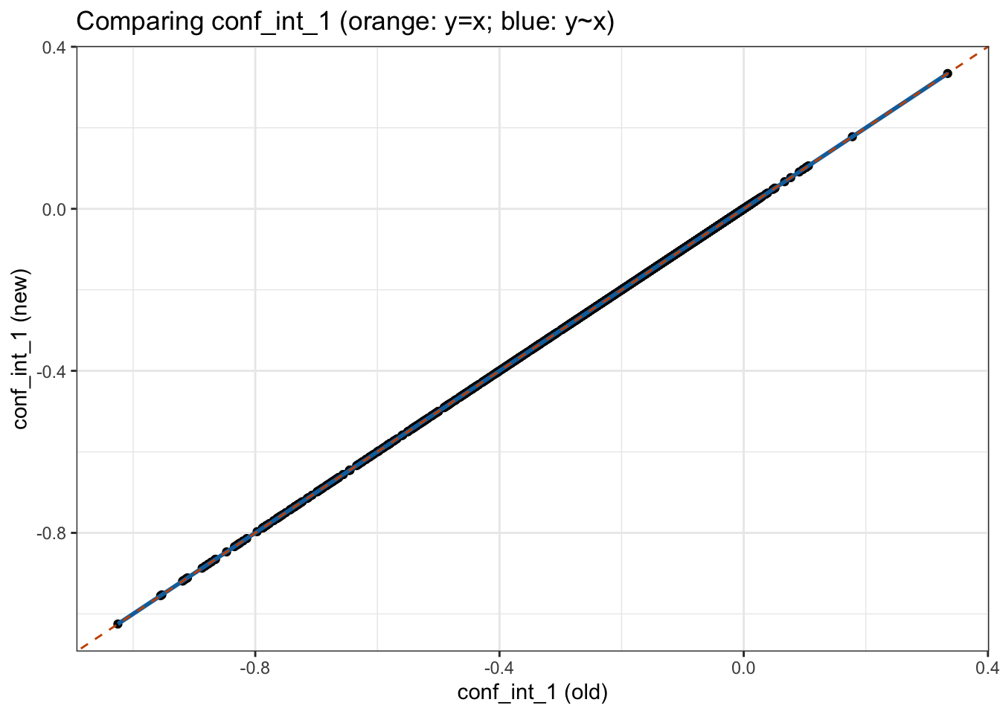
$conf_int_2_vs_conf_int_2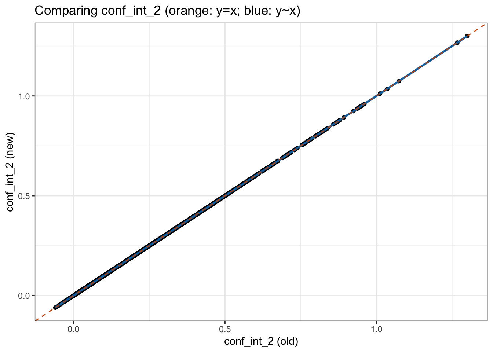
$odds_ratio_vs_odds_ratio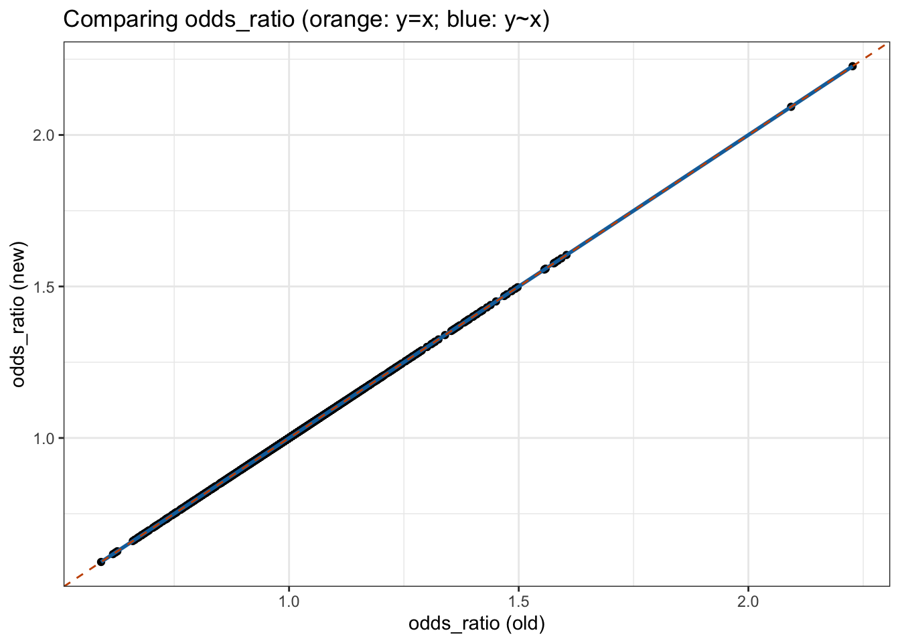
$log10_odds_ratio_vs_log10_odds_ratio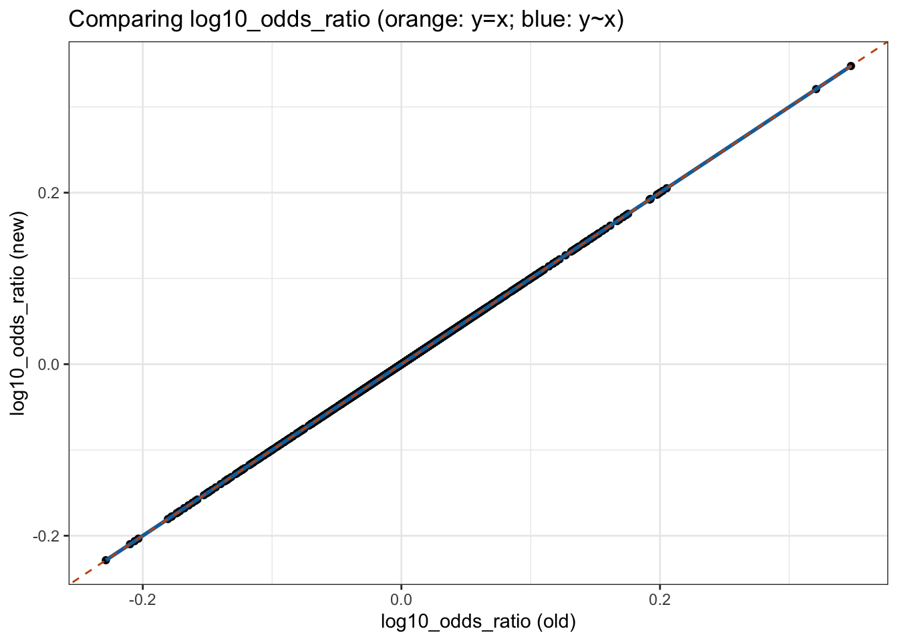
20260326 dsub 4bold_dt <- data.table::fread("/Users/xiangzhu/Downloads/phetk_aou_20260326/dsub_4b_results.tsv")
data.table::setorder(old_dt, phecode)
table(new_dt$phecode %in% old_dt$phecode, useNA = "always")
FALSE TRUE <NA>
45 2076 0
FALSE TRUE <NA>
66 2076 0 shared_phecode <- intersect(new_dt$phecode, old_dt$phecode)
new_dt_shared <- new_dt[phecode %in% shared_phecode]
old_dt_shared <- old_dt[phecode %in% shared_phecode]
xzTools::compare_2dts(
new_dt = new_dt_shared,
old_dt = old_dt_shared,
cols_to_compare = names(old_dt_shared),
cols_to_match = NULL,
get_exact_match = TRUE,
get_correlation = FALSE,
get_regression = FALSE,
get_scatterplot = FALSE
) new_col old_col nrow_total nrow_same
<char> <char> <int> <int>
1: phecode phecode 2076 2076
2: cases cases 2076 2076
3: controls controls 2076 2076
4: p_value p_value 2076 10
5: neg_log_p_value neg_log_p_value 2076 10
6: standard_error standard_error 2076 2075
7: beta beta 2076 4
8: conf_int_1 conf_int_1 2076 2075
9: conf_int_2 conf_int_2 2076 2075
10: odds_ratio odds_ratio 2076 100
11: log10_odds_ratio log10_odds_ratio 2076 76
12: converged converged 2076 1989
13: phecode_sex_restriction phecode_sex_restriction 2076 2076
14: phecode_string phecode_string 2076 2076
15: phecode_category phecode_category 2076 2076
nrow_both_nonna same_both_nonna
<int> <lgcl>
1: 2076 TRUE
2: 2076 TRUE
3: 2076 TRUE
4: 2076 FALSE
5: 2076 FALSE
6: 2076 FALSE
7: 2076 FALSE
8: 2076 FALSE
9: 2076 FALSE
10: 2076 FALSE
11: 2076 FALSE
12: 2076 FALSE
13: 2076 TRUE
14: 2076 TRUE
15: 2076 TRUEscat<-xzTools::compare_2dts(
new_dt = new_dt_shared,
old_dt = old_dt_shared,
cols_to_compare = names(old_dt_shared)[4:11],
cols_to_match = NULL,
get_exact_match = FALSE,
get_correlation = TRUE,
get_regression = TRUE,
get_scatterplot = TRUE
)Pearson correlation between p_value in new and p_value in old:
Estimate = 1.00000000, 95% CI = [1.00000000, 1.00000000]
Regression coefficients for p_value (new ~ old):
Estimate Std. Error t value Pr(>|t|)
(Intercept) 1.005031e-06 6.475710e-07 1.552001e+00 0.1208146
x 9.999985e-01 1.178586e-06 8.484732e+05 0.0000000
Pearson correlation between neg_log_p_value in new and neg_log_p_value in old:
Estimate = 0.99999998, 95% CI = [0.99999998, 0.99999998]
Regression coefficients for neg_log_p_value (new ~ old):
Estimate Std. Error t value Pr(>|t|)
(Intercept) 8.113089e-07 3.149873e-06 2.575688e-01 0.7967653
x 9.999939e-01 4.435406e-06 2.254571e+05 0.0000000
Pearson correlation between standard_error in new and standard_error in old:
Estimate = 0.99999996, 95% CI = [0.99999995, 0.99999996]
Regression coefficients for standard_error (new ~ old):
Estimate Std. Error t value Pr(>|t|)
(Intercept) -7.463735e-07 7.509852e-07 -9.938591e-01 0.3204074
x 1.000014e+00 6.377987e-06 1.567914e+05 0.0000000
Pearson correlation between beta in new and beta in old:
Estimate = 1.00000000, 95% CI = [1.00000000, 1.00000000]
Regression coefficients for beta (new ~ old):
Estimate Std. Error t value Pr(>|t|)
(Intercept) 4.584342e-08 6.854781e-08 6.687803e-01 0.5037101
x 1.000002e+00 6.022779e-07 1.660367e+06 0.0000000
Pearson correlation between conf_int_1 in new and conf_int_1 in old:
Estimate = 0.99999999, 95% CI = [0.99999999, 0.99999999]
Regression coefficients for conf_int_1 (new ~ old):
Estimate Std. Error t value Pr(>|t|)
(Intercept) -8.13321e-07 6.496841e-07 -1.251872 0.2107579
x 9.99998e-01 2.569102e-06 389240.231067 0.0000000
Pearson correlation between conf_int_2 in new and conf_int_2 in old:
Estimate = 0.99999999, 95% CI = [0.99999999, 0.99999999]
Regression coefficients for conf_int_2 (new ~ old):
Estimate Std. Error t value Pr(>|t|)
(Intercept) -1.518797e-06 6.7706e-07 -2.243224 0.02498759
x 1.000011e+00 2.5876e-06 386462.726120 0.00000000
Pearson correlation between odds_ratio in new and odds_ratio in old:
Estimate = 1.00000000, 95% CI = [1.00000000, 1.00000000]
Regression coefficients for odds_ratio (new ~ old):
Estimate Std. Error t value Pr(>|t|)
(Intercept) -4.375628e-06 9.357235e-07 -4.676198e+00 3.110569e-06
x 1.000004e+00 9.164992e-07 1.091113e+06 0.000000e+00
Pearson correlation between log10_odds_ratio in new and log10_odds_ratio in old:
Estimate = 1.00000000, 95% CI = [1.00000000, 1.00000000]
Regression coefficients for log10_odds_ratio (new ~ old):
Estimate Std. Error t value Pr(>|t|)
(Intercept) 1.990955e-08 2.976994e-08 6.687803e-01 0.5037101
x 1.000002e+00 6.022779e-07 1.660367e+06 0.0000000$p_value_vs_p_value
$neg_log_p_value_vs_neg_log_p_value
$standard_error_vs_standard_error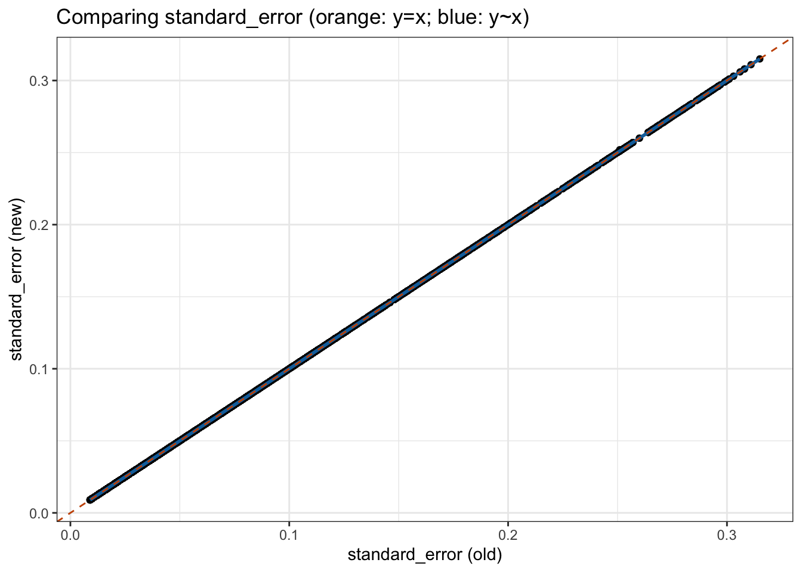
$beta_vs_beta
$conf_int_1_vs_conf_int_1
$conf_int_2_vs_conf_int_2
$odds_ratio_vs_odds_ratio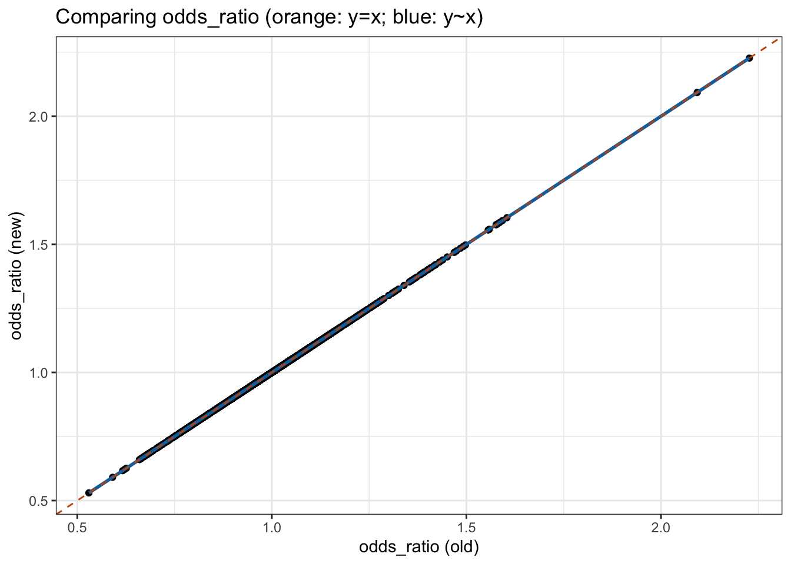
$log10_odds_ratio_vs_log10_odds_ratio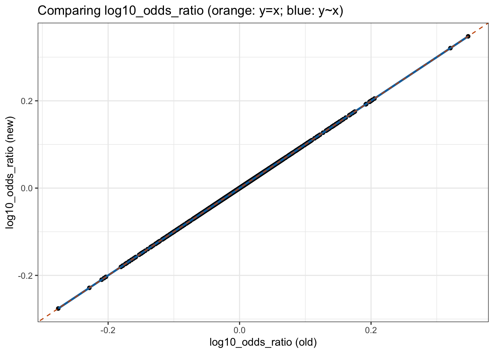
20260326 dsub 4aold_dt <- data.table::fread("/Users/xiangzhu/Downloads/phetk_aou_20260326/dsub_4a_results.tsv")
data.table::setorder(old_dt, phecode)
table(new_dt$phecode %in% old_dt$phecode, useNA = "always")
FALSE TRUE <NA>
47 2074 0
FALSE TRUE <NA>
67 2074 0 shared_phecode <- intersect(new_dt$phecode, old_dt$phecode)
new_dt_shared <- new_dt[phecode %in% shared_phecode]
old_dt_shared <- old_dt[phecode %in% shared_phecode]
xzTools::compare_2dts(
new_dt = new_dt_shared,
old_dt = old_dt_shared,
cols_to_compare = names(old_dt_shared),
cols_to_match = NULL,
get_exact_match = TRUE,
get_correlation = FALSE,
get_regression = FALSE,
get_scatterplot = FALSE
) new_col old_col nrow_total nrow_same
<char> <char> <int> <int>
1: phecode phecode 2074 2074
2: cases cases 2074 2074
3: controls controls 2074 2074
4: p_value p_value 2074 15
5: neg_log_p_value neg_log_p_value 2074 14
6: standard_error standard_error 2074 2072
7: beta beta 2074 3
8: conf_int_1 conf_int_1 2074 2072
9: conf_int_2 conf_int_2 2074 2071
10: odds_ratio odds_ratio 2074 108
11: log10_odds_ratio log10_odds_ratio 2074 73
12: converged converged 2074 1960
13: phecode_sex_restriction phecode_sex_restriction 2074 2074
14: phecode_string phecode_string 2074 2074
15: phecode_category phecode_category 2074 2074
nrow_both_nonna same_both_nonna
<int> <lgcl>
1: 2074 TRUE
2: 2074 TRUE
3: 2074 TRUE
4: 2074 FALSE
5: 2074 FALSE
6: 2074 FALSE
7: 2074 FALSE
8: 2074 FALSE
9: 2074 FALSE
10: 2074 FALSE
11: 2074 FALSE
12: 2074 FALSE
13: 2074 TRUE
14: 2074 TRUE
15: 2074 TRUEscat<-xzTools::compare_2dts(
new_dt = new_dt_shared,
old_dt = old_dt_shared,
cols_to_compare = names(old_dt_shared)[4:11],
cols_to_match = NULL,
get_exact_match = FALSE,
get_correlation = TRUE,
get_regression = TRUE,
get_scatterplot = TRUE
)Pearson correlation between p_value in new and p_value in old:
Estimate = 0.99999999, 95% CI = [0.99999999, 0.99999999]
Regression coefficients for p_value (new ~ old):
Estimate Std. Error t value Pr(>|t|)
(Intercept) 2.765217e-06 1.764223e-06 1.567385e+00 0.1171773
x 9.999959e-01 3.214064e-06 3.111313e+05 0.0000000
Pearson correlation between neg_log_p_value in new and neg_log_p_value in old:
Estimate = 0.99999984, 95% CI = [0.99999983, 0.99999985]
Regression coefficients for neg_log_p_value (new ~ old):
Estimate Std. Error t value Pr(>|t|)
(Intercept) 2.366323e-06 8.822058e-06 0.268228 0.7885505
x 9.999828e-01 1.239486e-05 80677.193428 0.0000000
Pearson correlation between standard_error in new and standard_error in old:
Estimate = 0.99999945, 95% CI = [0.99999940, 0.99999949]
Regression coefficients for standard_error (new ~ old):
Estimate Std. Error t value Pr(>|t|)
(Intercept) -2.872363e-06 2.709824e-06 -1.059981 0.2892766
x 1.000059e+00 2.306377e-05 43360.579116 0.0000000
Pearson correlation between beta in new and beta in old:
Estimate = 1.00000000, 95% CI = [1.00000000, 1.00000000]
Regression coefficients for beta (new ~ old):
Estimate Std. Error t value Pr(>|t|)
(Intercept) 1.392352e-07 1.973255e-07 7.056121e-01 0.4805087
x 1.000007e+00 1.737403e-06 5.755758e+05 0.0000000
Pearson correlation between conf_int_1 in new and conf_int_1 in old:
Estimate = 0.99999969, 95% CI = [0.99999966, 0.99999971]
Regression coefficients for conf_int_1 (new ~ old):
Estimate Std. Error t value Pr(>|t|)
(Intercept) -1.826347e-06 4.363522e-06 -0.4185488 0.6755893
x 1.000015e+00 1.737103e-05 57567.9807094 0.0000000
Pearson correlation between conf_int_2 in new and conf_int_2 in old:
Estimate = 0.99999963, 95% CI = [0.99999960, 0.99999966]
Regression coefficients for conf_int_2 (new ~ old):
Estimate Std. Error t value Pr(>|t|)
(Intercept) -7.170838e-06 4.941274e-06 -1.451213 0.1468721
x 1.000062e+00 1.884615e-05 53064.543598 0.0000000
Pearson correlation between odds_ratio in new and odds_ratio in old:
Estimate = 0.99999999, 95% CI = [0.99999999, 0.99999999]
Regression coefficients for odds_ratio (new ~ old):
Estimate Std. Error t value Pr(>|t|)
(Intercept) -1.285526e-05 2.703132e-06 -4.755691 2.113907e-06
x 1.000013e+00 2.645913e-06 377946.261687 0.000000e+00
Pearson correlation between log10_odds_ratio in new and log10_odds_ratio in old:
Estimate = 1.00000000, 95% CI = [1.00000000, 1.00000000]
Regression coefficients for log10_odds_ratio (new ~ old):
Estimate Std. Error t value Pr(>|t|)
(Intercept) 6.046910e-08 8.569736e-08 7.056121e-01 0.4805087
x 1.000007e+00 1.737403e-06 5.755758e+05 0.0000000$p_value_vs_p_value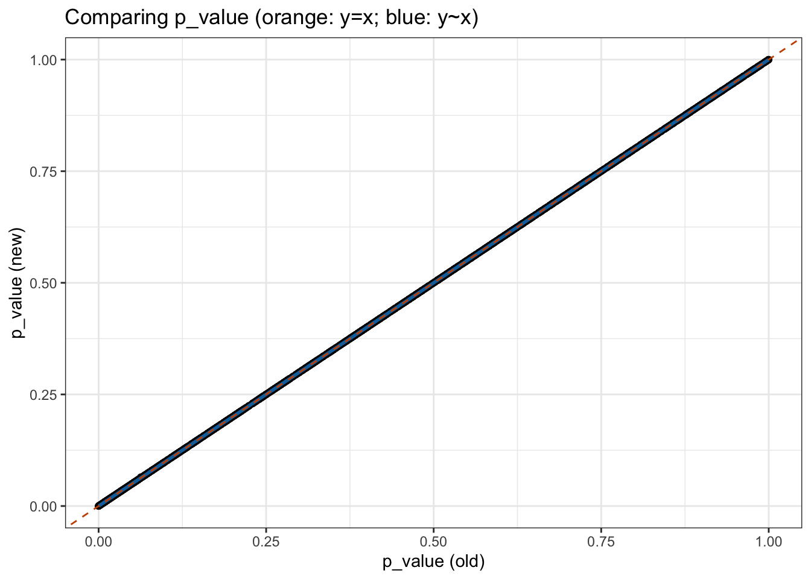
$neg_log_p_value_vs_neg_log_p_value
$standard_error_vs_standard_error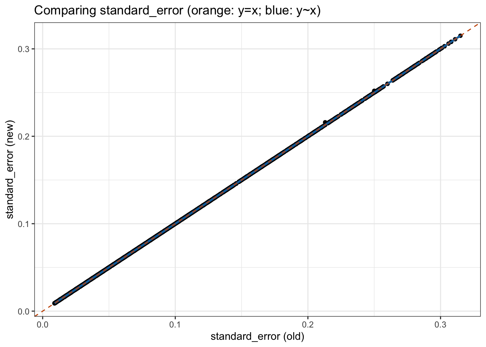
$beta_vs_beta
$conf_int_1_vs_conf_int_1
$conf_int_2_vs_conf_int_2
$odds_ratio_vs_odds_ratio
$log10_odds_ratio_vs_log10_odds_ratio20260318 dsubold_dt <- data.table::fread("/Users/xiangzhu/Downloads/phetk_aou_20260318/chr18_53346253_T_C_phewas_results_dsub.tsv")
data.table::setorder(old_dt, phecode)
table(new_dt$phecode %in% old_dt$phecode, useNA = "always")
FALSE TRUE <NA>
48 2073 0
FALSE TRUE <NA>
67 2073 0 shared_phecode <- intersect(new_dt$phecode, old_dt$phecode)
new_dt_shared <- new_dt[phecode %in% shared_phecode]
old_dt_shared <- old_dt[phecode %in% shared_phecode]
xzTools::compare_2dts(
new_dt = new_dt_shared,
old_dt = old_dt_shared,
cols_to_compare = names(old_dt_shared),
cols_to_match = NULL,
get_exact_match = TRUE,
get_correlation = FALSE,
get_regression = FALSE,
get_scatterplot = FALSE
) new_col old_col nrow_total nrow_same
<char> <char> <int> <int>
1: phecode phecode 2073 2073
2: cases cases 2073 2073
3: controls controls 2073 2073
4: p_value p_value 2073 8
5: neg_log_p_value neg_log_p_value 2073 6
6: standard_error standard_error 2073 2072
7: beta beta 2073 6
8: conf_int_1 conf_int_1 2073 2071
9: conf_int_2 conf_int_2 2073 2071
10: odds_ratio odds_ratio 2073 105
11: log10_odds_ratio log10_odds_ratio 2073 70
12: converged converged 2073 1978
13: phecode_sex_restriction phecode_sex_restriction 2073 2073
14: phecode_string phecode_string 2073 2073
15: phecode_category phecode_category 2073 2073
nrow_both_nonna same_both_nonna
<int> <lgcl>
1: 2073 TRUE
2: 2073 TRUE
3: 2073 TRUE
4: 2073 FALSE
5: 2073 FALSE
6: 2073 FALSE
7: 2073 FALSE
8: 2073 FALSE
9: 2073 FALSE
10: 2073 FALSE
11: 2073 FALSE
12: 2073 FALSE
13: 2073 TRUE
14: 2073 TRUE
15: 2073 TRUEscat<-xzTools::compare_2dts(
new_dt = new_dt_shared,
old_dt = old_dt_shared,
cols_to_compare = names(old_dt_shared)[4:11],
cols_to_match = NULL,
get_exact_match = FALSE,
get_correlation = TRUE,
get_regression = TRUE,
get_scatterplot = TRUE
)Pearson correlation between p_value in new and p_value in old:
Estimate = 0.99999993, 95% CI = [0.99999993, 0.99999994]
Regression coefficients for p_value (new ~ old):
Estimate Std. Error t value Pr(>|t|)
(Intercept) 7.570252e-06 4.387904e-06 1.725255e+00 0.08463079
x 9.999888e-01 7.968868e-06 1.254869e+05 0.00000000
Pearson correlation between neg_log_p_value in new and neg_log_p_value in old:
Estimate = 0.99999895, 95% CI = [0.99999886, 0.99999904]
Regression coefficients for neg_log_p_value (new ~ old):
Estimate Std. Error t value Pr(>|t|)
(Intercept) 6.424351e-06 2.246922e-05 2.859179e-01 0.7749696
x 9.999543e-01 3.177854e-05 3.146634e+04 0.0000000
Pearson correlation between standard_error in new and standard_error in old:
Estimate = 0.99999894, 95% CI = [0.99999884, 0.99999903]
Regression coefficients for standard_error (new ~ old):
Estimate Std. Error t value Pr(>|t|)
(Intercept) -3.624378e-06 3.772162e-06 -0.9608226 0.3367536
x 1.000067e+00 3.202863e-05 31224.1454291 0.0000000
Pearson correlation between beta in new and beta in old:
Estimate = 0.99999998, 95% CI = [0.99999997, 0.99999998]
Regression coefficients for beta (new ~ old):
Estimate Std. Error t value Pr(>|t|)
(Intercept) 3.785220e-07 5.397238e-07 7.013255e-01 0.4831787
x 1.000019e+00 4.739231e-06 2.110087e+05 0.0000000
Pearson correlation between conf_int_1 in new and conf_int_1 in old:
Estimate = 0.99999943, 95% CI = [0.99999938, 0.99999948]
Regression coefficients for conf_int_1 (new ~ old):
Estimate Std. Error t value Pr(>|t|)
(Intercept) -7.412398e-06 5.905024e-06 -1.25527 0.2095225
x 9.999847e-01 2.345114e-05 42641.20182 0.0000000
Pearson correlation between conf_int_2 in new and conf_int_2 in old:
Estimate = 0.99999916, 95% CI = [0.99999908, 0.99999923]
Regression coefficients for conf_int_2 (new ~ old):
Estimate Std. Error t value Pr(>|t|)
(Intercept) -1.65334e-05 7.498568e-06 -2.204874 0.02757248
x 1.00012e+00 2.852781e-05 35057.723178 0.00000000
Pearson correlation between odds_ratio in new and odds_ratio in old:
Estimate = 0.99999995, 95% CI = [0.99999994, 0.99999995]
Regression coefficients for odds_ratio (new ~ old):
Estimate Std. Error t value Pr(>|t|)
(Intercept) -0.0000347292 7.361907e-06 -4.717419 2.547989e-06
x 1.0000350633 7.205611e-06 138785.601003 0.000000e+00
Pearson correlation between log10_odds_ratio in new and log10_odds_ratio in old:
Estimate = 0.99999998, 95% CI = [0.99999997, 0.99999998]
Regression coefficients for log10_odds_ratio (new ~ old):
Estimate Std. Error t value Pr(>|t|)
(Intercept) 1.643900e-07 2.343990e-07 7.013255e-01 0.4831787
x 1.000019e+00 4.739231e-06 2.110087e+05 0.0000000$p_value_vs_p_value
$neg_log_p_value_vs_neg_log_p_value
$standard_error_vs_standard_error
$beta_vs_beta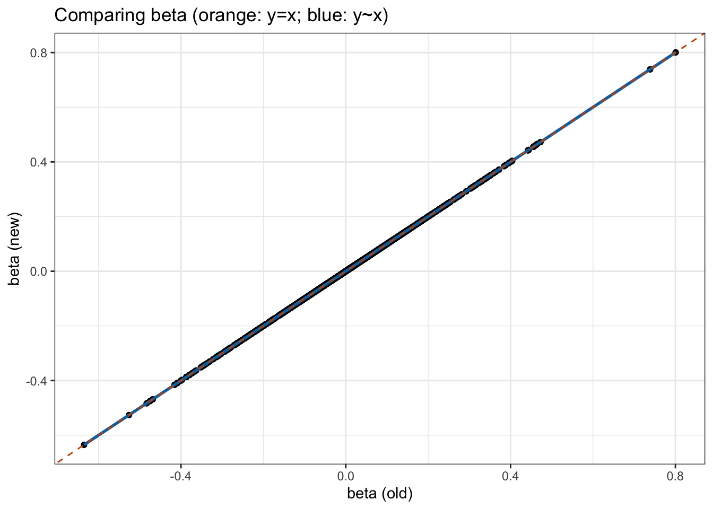
$conf_int_1_vs_conf_int_1
$conf_int_2_vs_conf_int_2
$odds_ratio_vs_odds_ratio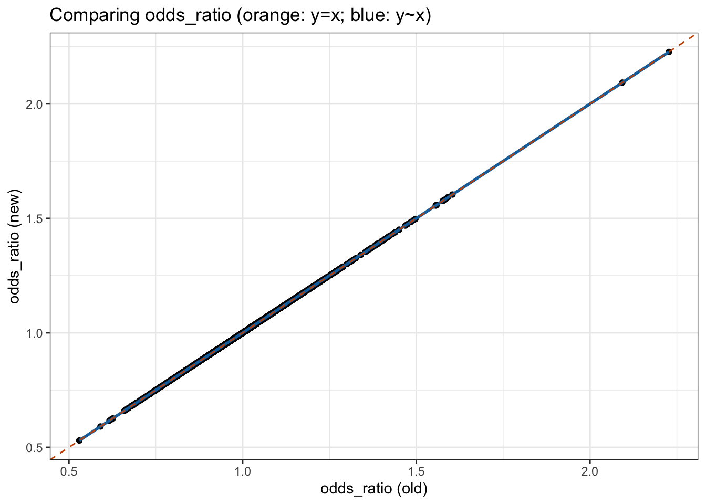
$log10_odds_ratio_vs_log10_odds_ratio
R version 4.5.2 (2025-10-31)
Platform: aarch64-apple-darwin20
Running under: macOS Tahoe 26.3.1
Matrix products: default
BLAS: /System/Library/Frameworks/Accelerate.framework/Versions/A/Frameworks/vecLib.framework/Versions/A/libBLAS.dylib
LAPACK: /Library/Frameworks/R.framework/Versions/4.5-arm64/Resources/lib/libRlapack.dylib; LAPACK version 3.12.1
locale:
[1] en_US.UTF-8/en_US.UTF-8/en_US.UTF-8/C/en_US.UTF-8/en_US.UTF-8
time zone: America/Los_Angeles
tzcode source: internal
attached base packages:
[1] stats graphics grDevices utils datasets methods base
other attached packages:
[1] xzTools_0.0.0.9000 data.table_1.18.2.1 workflowr_1.7.2
loaded via a namespace (and not attached):
[1] sass_0.4.10 generics_0.1.4 lattice_0.22-9 stringi_1.8.7
[5] digest_0.6.39 magrittr_2.0.4 evaluate_1.0.5 grid_4.5.2
[9] RColorBrewer_1.1-3 fastmap_1.2.0 Matrix_1.7-4 rprojroot_2.1.1
[13] jsonlite_2.0.0 processx_3.8.6 whisker_0.4.1 ps_1.9.1
[17] promises_1.5.0 httr_1.4.8 mgcv_1.9-4 scales_1.4.0
[21] jquerylib_0.1.4 cli_3.6.5 rlang_1.1.7 splines_4.5.2
[25] withr_3.0.2 cachem_1.1.0 yaml_2.3.12 otel_0.2.0
[29] tools_4.5.2 dplyr_1.2.0 ggplot2_4.0.2 httpuv_1.6.16
[33] vctrs_0.7.2 R6_2.6.1 lifecycle_1.0.5 git2r_0.36.2
[37] stringr_1.6.0 fs_1.6.6 pkgconfig_2.0.3 callr_3.7.6
[41] pillar_1.11.1 bslib_0.10.0 later_1.4.7 gtable_0.3.6
[45] glue_1.8.0 Rcpp_1.1.1 xfun_0.56 tibble_3.3.1
[49] tidyselect_1.2.1 rstudioapi_0.18.0 knitr_1.51 farver_2.1.2
[53] nlme_3.1-168 htmltools_0.5.9 labeling_0.4.3 rmarkdown_2.30
[57] compiler_4.5.2 getPass_0.2-4 S7_0.2.1